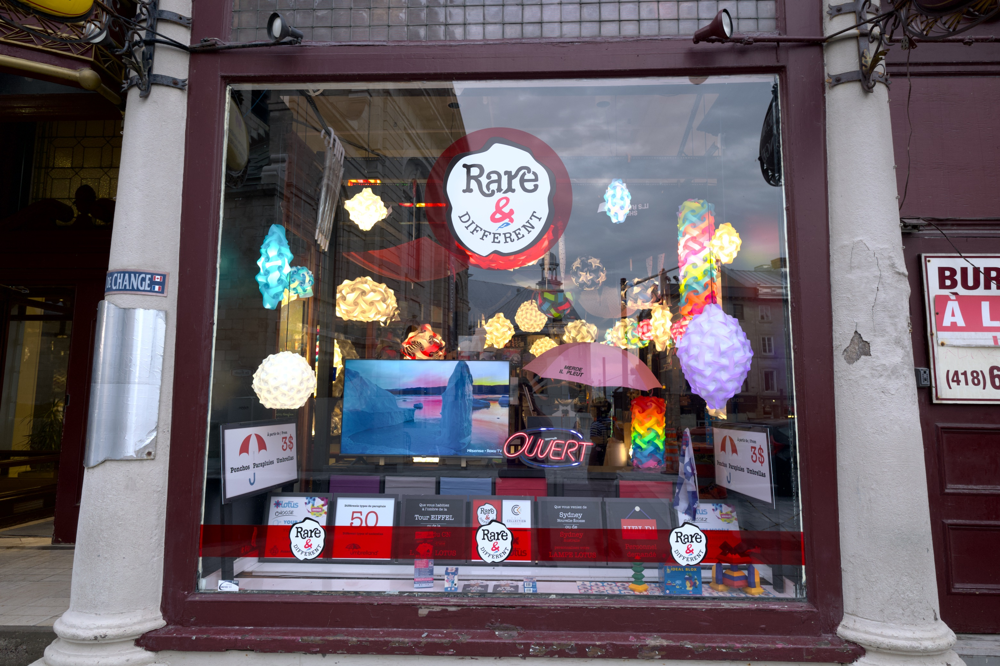
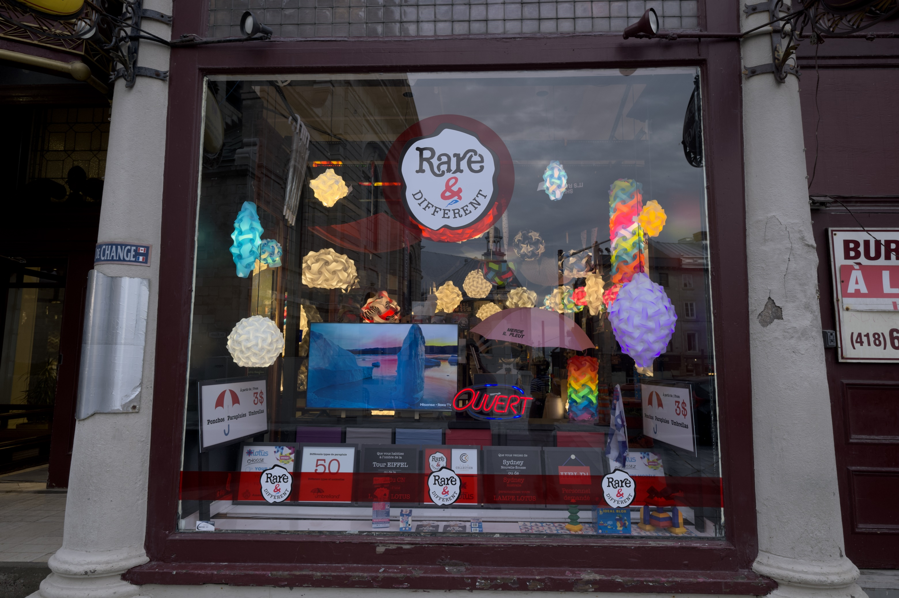
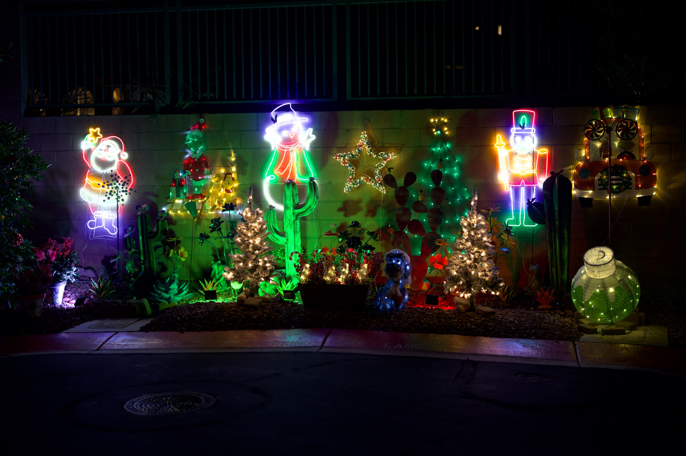
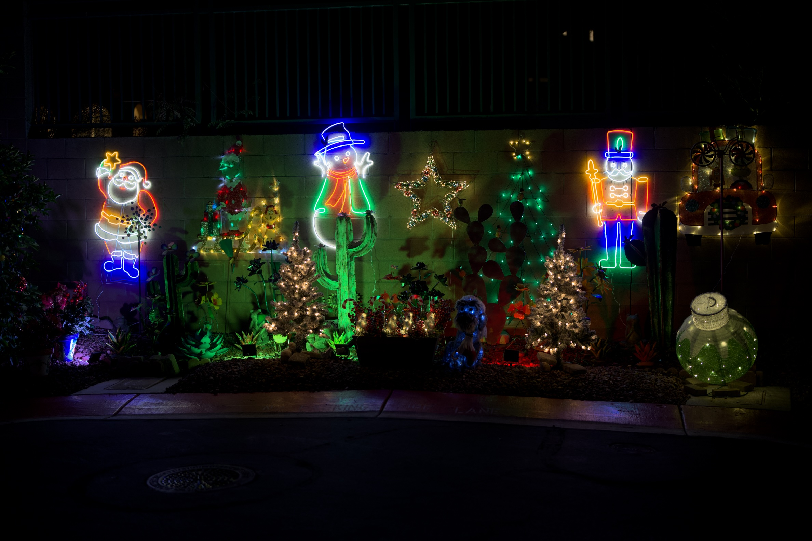

Your Exports Are Four Stops Behind Your Camera
Your camera captures it. Your screen can show it. The file in between still can't carry it.
TL;DR
- A typical RAW file holds as much as 4 stops of real detail above SDR white. Recovery has always reached it — but every SDR export rolls it off and files it back under paper white.
- The displays are already here: most phones and recent laptops are HDR. The missing piece is the file, not the hardware.
- The fix exists: JPEG with a gain map (ISO 21496-1). One file — full HDR where supported, a normal, correct photograph everywhere else. It fails soft, so exporting it costs nothing.
- Where it displays as HDR today: any browser on iOS 26, desktop Chrome, Apple Photos and Messages, Instagram and Threads feed posts, Lightroom. Facebook and most upload pipelines still flatten to SDR.
- The last SDR link is the camera itself — SDR viewfinder, SDR rear screen, no HDR file output. Cameras should write gain-map JPEG in-camera; phones have done it at burst rate for years.
If you shoot RAW seriously, you already work the top of the file. You expose to the right, guard the highlights, and pull them back in the editor — recovery that RAW converters have been doing for twenty years.
So this is not an article about headroom you never knew you had. It is about what has always happened to that headroom on the way out.
There is as much as 4 stops of information above SDR white in a typical RAW file — real color, real detail, real gradation. Recovery reconstructs it; an SDR export then rolls it off and files it under diffuse white, because a print or an SDR screen has nowhere brighter to put it. The specular glint on water, the sun flaring off glass, the inside of a sunlit cloud: the detail survives the trip, but the brightness — the thing that made a highlight a highlight — does not.
We treat that roll-off as a fact of photography. It is not. It is a property of the output format we chose to save into, and of the displays it was designed for.
Why it never felt like a loss
The arrangement has an honest origin. For thirty years the output was SDR — a print, or a screen that could show roughly six stops. When the destination cannot represent anything above diffuse white, there is nowhere to put those extra stops, so the entire imaging pipeline was built to discard them early and gracefully. Highlight roll-off, that gentle shoulder we all learned to love, is a compression strategy: it takes information you cannot display and squeezes it into a range you can.
That was the correct engineering decision. The constraint that justified it is gone.
The habit outlived it. We still expose to protect highlights we could now keep. We still evaluate images on displays that cannot show what we captured. We still export to a format designed around a limitation our hardware no longer has.
The hardware already caught up
This is what makes the argument urgent rather than theoretical. Every M-series MacBook Pro has an XDR display. Recent iPhones and iPads have HDR screens. You are not waiting for new hardware — you are probably reading this on it.
The displays arrived first, quietly, and the photographs never followed.
What "true HDR" actually means
The term needs rescuing, because it has meant three different things and two of them are not this.
It does not mean the tone-mapped look of 2012 — the gray skies, haloed edges and crunchy local contrast that gave "HDR" its bad name. That was an attempt to cram high dynamic range into a low dynamic range file, and it looked like it.
It does not mean an exposure blend, where you merge brackets to recover a scene one frame could not hold.
True HDR is simpler and less dramatic: the scene's actual range, delivered to a display that can actually show it. No tricks, no local contrast games. A highlight that was four stops brighter than white in the world is four stops brighter than white on your screen. It looks normal — which is precisely the point. It looks like the scene did.
See it for yourself
Not sure what your browser is doing? Test it here — three images and a table that tells you what the result means.

SDR. A window full of lit lamps, a neon OUVERT sign and a glowing screen — and not one of them reads as switched on. With nowhere above white to put a light source, a lamp that is genuinely emitting lands on the same value as the printed card beside it. Click for full size.

HDR. Same RAW file, same processing, exported as a gain-map JPEG. The lamps and the neon rise above white where they belong, and the window sorts itself back into things that emit light and things that merely reflect it. Click for full size.
Fujifilm X-H2S, XF 10-24mm F4 R OIS.
Night scenes make the point hardest, because almost everything worth seeing is a light source.

SDR. Watch the neon — Santa, the snowman, the nutcracker. Where each tube is brightest it turns white, so the color drains out of precisely the part that is doing the glowing. The string lights on the small trees run together into one pale mass. Click for full size.

HDR. The tubes hold their color the whole way through, and the string lights separate back into individual points — because they are allowed to sit above white rather than being pushed down onto it. Click for full size.
Sony A7R V, FE 50mm F1.2 GM. Photograph © David Redfearn.
There is a second thing worth noticing in that pair, and it overturns a common assumption. The soft white swelling around each light in the SDR version looks like sensor blooming — charge spilling out of a saturated photosite into its neighbors, the usual explanation for why night shots go mushy around the lights.
The HDR version shows that is not what happened. The sensor recorded each light cleanly, with its falloff intact. Brightness drops away steeply around a neon tube or a filament, and in this frame the brightest points reach about ten times the level of white — so when everything above white is mapped onto white, a thin intense line becomes a fat pale one. Some genuine optical flare is in there too, and that survives in both versions. But the spreading is made at export, not at capture. The sensor was never the problem.
Neon at night is easy to dismiss as a special case. So here is the photograph everyone actually takes: daylight, clouds, a landscape. It runs into the same ceiling from the other direction — the lit face of a cloud, the snowfield beneath it, and the haze between them are all brighter than paper white, so an SDR export files them at the same value, and the range collapses exactly where the scene depends on it.

SDR. A conventional export, carefully processed in DxO PhotoLab — and the ceiling still shows. The cloud bank sitting on the range and the snow beneath it converge on the same white, so the brightest third of the scene flattens into one value. Click for full size.

HDR. The same RAW file exported from ApolloOne as a gain-map JPEG. The sunlit cloud rises above white and reads as luminous again, the snow keeps its texture instead of merging into the cloud, and the depth between haze, cloud and snowfield comes back. Click for full size.
OM System OM-1, M.Zuiko Digital ED 12-45mm F4 Pro. Photograph © Shane Dias.
Those frames came off a Fujifilm, a Sony, and an OM System body, and it makes no difference. The extra range is not a feature any manufacturer added — it is what the sensor recorded, sitting in the RAW file, waiting on an export format willing to carry it. Every camera in this class has been capturing it for years.
"But you can't print it"
This is the strongest objection and it deserves a straight answer: correct. You cannot print an HDR image. Ink on paper has a contrast ratio, and it is not going up.
But look at where photographs are actually seen now. Sharing has moved to mobile, and mobile devices overwhelmingly have HDR displays. The photograph you post is far more likely to be viewed on an OLED phone held at arm's length than on any print. If you are optimizing for the medium your audience actually uses, HDR is not a niche — it is the common case, and SDR is the compromise.
Print remains print. Nothing about shooting for HDR stops you making an SDR rendering for paper; that is a single export away. The reverse is not true. Save an SDR JPEG and those four stops are gone for good.
Getting the bits to the viewer
So how do those highlights reach someone else's screen? This is where the format question finally matters, and where the industry has partly gone the wrong way.
HEIF with an HLG transfer function — the route several manufacturers took — has two failure modes. Outside Apple's ecosystem the file is often simply unopenable. And on an SDR screen it does not degrade to something correct; it degrades to something wrong, washed out and flat, because the viewer has no idea how to interpret the transfer function. A format that looks broken to half your audience is not a sharing format.
JPEG with a gain map (standardized as ISO 21496-1) solves exactly this. The file is an ordinary JPEG plus a small auxiliary image describing, per pixel, how much brighter the HDR rendering should be. An SDR viewer sees a completely normal photograph and never knows the gain map is there. An HDR viewer applies it and sees the full range. One file, correct everywhere, no forked workflow.
There is a wrinkle worth knowing before you rely on that. The gain map itself is standardized; the signaling that tells a viewer to go looking for one is not, yet. Apple writes its own marker and hangs the gain map's parameters off the auxiliary image. Google's Ultra HDR — which is what Chrome reads — expects a version tag and a container directory on the main image instead. Apple's software reads both conventions. Chrome, today, reads only Google's.
So a gain-map JPEG written on a Mac can open as a flat SDR photograph in Chrome, on a display perfectly capable of showing the HDR version, with nothing on screen to suggest anything was withheld. The file is not broken and the standard is not at fault — the reader simply was not told where to look. A file can carry both conventions at once, and then every current viewer handles it correctly, but that has to be done on purpose. If you are choosing an exporter, it is worth asking whether it does.
HEIC with a gain map — the file an iPhone writes by default — looks like the obvious refinement, and the instinct behind it is sound: the same SDR-plus-gain-map idea, in the container Apple already uses, at roughly half the size of the equivalent JPEG. The saving is real, and unlike HLG the HDR mechanism is the right one. Inside Apple's ecosystem it is an excellent format.
What it cannot do is travel. HEIC is HEVC video compression inside a picture file, and HEVC comes with patent licensing that browser makers outside Apple have declined to buy: Chrome and Firefox have never opened a HEIC and show no sign of starting — not flattened, not washed out, simply unopenable — and a Windows machine needs a paid codec add-on before its own Photos app will look at one. Safari renders it, gain map and all. Nothing else does. So the size advantage buys a file that most of the web treats as a download rather than a photograph. The failure is different in kind from HLG's — right mechanism, wrong reach — but for sharing the result is the same. Half the bytes are no bargain when half your audience gets none of them.
JPEG XL is the best long-term answer for capture and archival — small, full color depth, HDR throughout, lossy like JPEG but at far higher quality per byte. It is the format RAW should eventually give way to. It is not, today, a delivery format: Safari decodes it natively, but Chrome still hides it behind a flag and Firefox does the same, so most of your audience cannot see a JXL file at all.
These are not competing choices. Gain-map JPEG solves sharing now. JPEG XL solves archival later.
The apps haven't caught up with the browsers
There is one more gap between you and your audience, and it is worth knowing exactly where it sits. The browsers have finished their half: since iOS 26, every browser on an iPhone renders gain-map HDR — they all share Apple's WebKit engine, so one engine change upgraded all of them at once — and desktop Chrome has done it since 2023. The apps photographs actually travel through are further behind.
The list of apps that will show your photograph in HDR today is short: Apple's Photos and Messages, Instagram and Threads — in feed posts, not Stories, and only when the upload keeps its original aspect ratio — Google Photos, and Lightroom. Facebook flattens photographs to SDR on upload, even though its HDR video passes. The chat apps mostly lose the gain map at the compression step: a default photo send in WhatsApp or Telegram re-encodes the image and the highlights go with it, though both deliver the file byte-for-byte intact if you send it as a document instead — whether the app at the other end then displays the HDR is a separate question. Signal re-encodes on every path, by design. And for a long tail of others nobody has published a test at all, which is itself a measure of how early it is. The doubt differs in kind, though: for X, TikTok or Reddit it is whether the upload pipeline lets the gain map survive; a mail attachment sent at actual size arrives byte-for-byte intact, and the only question is whether the mail app shows the HDR — worst case the range is still in the file, and saving it to Photos displays it. The cloud drives barely enter the question: they move bytes untouched, and the viewer at the far end decides.
The reason is structural rather than technical. iOS hands every app the SDR rendering by default; showing the HDR takes a deliberate request that each developer has to make. That is the whole story of why the web got there first — one engine change flipped every browser together, while the apps have to say yes one at a time.
None of this argues for waiting. A gain-map JPEG fails soft: wherever support is missing, your audience sees an ordinary, correct photograph — never a broken one — and the same file lights up as support arrives. The plumbing is moving too: libvips, the image library inside many websites' upload pipelines, learned to carry gain maps through a resize in late 2025. Each service still has to turn that on — the gain map rides the same switch most pipelines use to strip location data — but the excuse that the tooling could not do it is gone. "Uploads strip it" is a statement with a shelf life.
The camera is the last SDR link in the chain
Think about where the dynamic range actually goes on a shoot today. Your eye sees a scene with enormous range. The sensor captures most of it. Then you compose that scene through an SDR electronic viewfinder, check it on an SDR rear screen, and save it to a file format that discards the top four stops — before finally viewing it on a display that could have shown you all of it.
Every link in that chain is capable except the ones inside the camera.
That is worth sitting with, because it reframes the problem. This is not a missing feature. It is the only remaining bottleneck in an otherwise HDR-ready pipeline: Apple ships XDR displays on every MacBook Pro, plenty of third-party monitors do HDR, the operating systems support it, phones already shoot it, and the viewing and editing software exists. The camera industry is the last holdout in a chain that everyone else has already upgraded.
Why this is in the manufacturers' interest
Here is the part camera makers should care about most, and it is commercial rather than technical.
Mirrorless bodies and sensors have become extraordinary. Autofocus is uncanny, stabilisation is remarkable, resolution and burst rates long ago passed what most photographers need. Which raises an awkward question for anyone selling cameras: what is left to put on the box? The spec race that drove upgrades for a decade is largely finished. Existing owners look at a new body and struggle to justify it.
HDR is the answer sitting in plain sight. It is not an incremental half-stop of something; it is a visibly different photograph, on hardware customers already own. And it is a genuine product generation:
- HDR electronic viewfinders — compose the scene with the range you are actually capturing, instead of a flattened preview of it.
- HDR rear LCDs — judge a shot in the field and see the real highlights, not a clipped approximation.
- HDR file output — a file that carries the range home and displays correctly when it gets there.
That is a headline feature set, not a firmware footnote. It gives a manufacturer something to demonstrate on a shop floor that a customer can see in a single glance — which is exactly what the current generation of bodies lacks.
What that means concretely
Now: write JPEG + gain map in-camera. The usual objection is pipeline cost — can a camera really do this at burst rates? It already can. A gain map is a ratio between the SDR and HDR renderings, quantised to 8 bits and downsampled; it rides the JPEG encoder every camera already has, rather than requiring a new codec block. And the proof is in everyone's pocket: phones have been producing gain-map HDR stills at capture rate for years, on a fraction of the silicon a flagship camera carries. If a phone can do it in a burst, so can a camera with a dedicated image processor.
Next: HDR EVFs and rear screens. This one is real hardware and real cost, and it is also the part that sells bodies. Shooting HDR through an SDR viewfinder is like mixing a record on headphones that cannot reproduce bass — you can do it, but you are working blind in exactly the region you are trying to control.
Sony has come furthest here, and the A7R VI is worth studying precisely because it gets so much right. It is the first camera with an HDR-capable viewfinder — 10-bit HLG, DCI-P3, roughly three times brighter than its predecessor — and it captures HDR stills. That is the correct direction, and it makes the rest of the industry's position harder to defend.
It also shows how easily you can build half a workflow. The viewfinder shows you high dynamic range, but the histogram beside it still measures SDR — so you can see the highlight range and have no way to measure it, which is the one thing a histogram exists to do. And the file it writes is HEIF with the HLG curve: the format that will not open reliably off an Apple device and degrades wrongly rather than gracefully. Sony solved the expensive part, the display, and then handed the result to the delivery format most likely to strand it.
Note what that first gap is not: a hardware limitation. The panel already renders high dynamic range; teaching the histogram to measure it is a firmware question. The most valuable HDR feature Sony could ship next may cost nothing to manufacture.
That is not a criticism of a good camera so much as a description of the opportunity. The hardware is already arriving. What is missing is the rest of the chain around it — the metering that matches the viewfinder, and an output format that survives the trip to someone else's screen.
Later: JPEG XL as the archival format. Here the engineering objection is real and worth stating honestly — software JXL encoding is slow, and doing it at capture rate plausibly requires dedicated hardware. That is a genuine ask with a genuine cost, and it will take a product cycle or three. It is still the right destination: small files, full color depth, HDR throughout, in the role RAW occupies now.
The near-term request is the modest one. The bits are already in the file. The encoder is already in the camera. The displays are already in our hands. What is missing is a menu item.
It is 2026. Photography spent the better part of a decade with "HDR" meaning a garish, over-processed look, because that was the only way to hint at high dynamic range inside a low dynamic range file. That constraint is gone, the hardware is on desks and in pockets, and the real thing looks nothing like the parody. There is no good reason for the picture to still stop at SDR white.
What you can do today
You do not have to wait for any of this to see what your own files contain.
ApolloOne 4.7.0 renders your RAW files in HDR on screen — the highlights as the sensor recorded them, not a flattened stand-in. Open a file you shot last year and look at how much of it you have never seen.
And when you want to share what you find, it exports gain-map JPEG carrying both signaling conventions, Apple's and Google's Ultra HDR, so one file opens as HDR in Chrome and in Safari instead of only one of them — and as an ordinary correct photograph everywhere else. Full HDR to AVIF and JPEG XL in PQ as well, and HEIC if you want the ISO gain map in Apple's own container.
Camera RawX brings HDR previews to Quick Look for RAW files macOS cannot open on its own. And ApolloOne GO puts the same HDR rendering on an iPad or iPhone, so you can judge the real range of a shot in the field — on the kind of display you will probably end up sharing it on.
Every HDR image on this page was exported from ApolloOne 4.7.0 as a gain-map JPEG. That is the whole argument in one file: it looks right on your phone, it looks right on your laptop, and if your screen can show you those four stops, it just did.